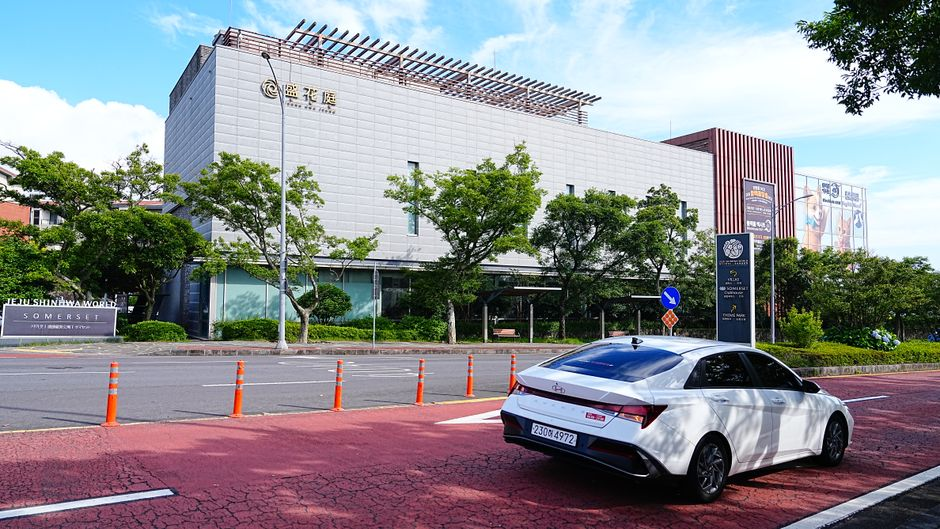

스마트상점 기술보급사업 2차 — 연 30만원 100% 국비, D-14 (9/30 마감)

인건비·주문 처리로 힘든 점포주가 소프트웨어 구독료를 최대 2년간 연 30만원, 국비 100%로 지원받는 사업입니다. 2026년 2차(S/W형) 공고의 접수 마감이 9월 30일 수요일 17시로, 오늘 기준 D-14입니다. 아래 조건은 오늘 공식 공고 페이지에서 직접 옮겨 적은 내용입니다.
핵심 조건 (원문 표 대조)
| 항목 | 내용 |
|---|---|
| 지원 대상 | 소상공인기본법상 소상공인으로, 신청일 현재 정상 영업 중인 점포 (중소기업현황정보시스템 sminfo.mss.go.kr에서 소상공인확인서 발급 가능한 점포) |
| 지원 내용 | 소프트웨어 구독료 (S/W형·개인) |
| 지원 한도 | 상점 당 연 30만원 (최대 2년) |
| 국비 비율 | 100% |
| 접수 기간 | 2026.08.26 10:00 ~ 2026.09.30 17:00 |
| 신청 방법 | 홈페이지 접수 (www.sbiz.or.kr/smst/index.do) — 대표자 명의 회원가입 후 온라인 신청 |
누가 지금 신청할 수 있나
- 수혜 이력이 없는 신규 소상공인 — 이번 2차(S/W형) 공고의 대상입니다.
- 이미 보편·일반 기술을 지원받은 점포가 S/W형을 원하면 추가모집 공고를 기다려야 합니다.
신청서에서 진짜 떨어지는 이유
업체소개·지원동기·활용계획은 선정평가 핵심 자료인데, 원문이 명시적으로 경고합니다.
동일·유사 내용의 반복 기재 또는 외부에서 제공된 신청서를 단순 복사·붙여넣기 방식으로 제출할 경우, 불성실 기재로 탈락될 수 있음
남의 템플릿을 그대로 붙여넣는 순간 탈락입니다. 원문 작성 예시처럼 업종·운영 기간·일 평균 방문객 수·현재 주문 방식(수기/일반 POS)·구체적 애로(주문 누락, 회전율 저하)까지 우리 가게 숫자로 채우세요.
지금 행동 (D-14)
- sminfo.mss.go.kr에서 소상공인확인서 발급 가능 여부 확인 — 안 나오면 대상 아님
- sbiz.or.kr/smst 대표자 명의 회원가입 (가입 이력 있으면 로그인만)
- 업체소개·지원동기·활용계획을 우리 가게 숫자로 작성 → 9/30 17시 전 제출
자주 묻는 질문
구입·렌탈형과 뭐가 다른가요?
같은 기간에 [구입·렌탈형] 2차 공고도 접수 중입니다(키오스크 등 기기). S/W형은 구독형 소프트웨어(예약·주문·재고 관리 앱 등) 구독료 지원이니 목적에 맞게 하나를 고르세요.
현금으로 주나요?
구독료를 지원하는 구조입니다. 선정 후 절차·기술 공급기업 연결은 공고문 붙임 매뉴얼을 따릅니다.
제도·예산·마감은 변경될 수 있습니다. 실제 신청 요건은 반드시 신청 시점의 공식 공고문에서 재확인하세요. 본 사이트는 정부기관과 무관한 민간 정보 서비스입니다. 수치·제도 정정은 문의 페이지로 보내주세요.